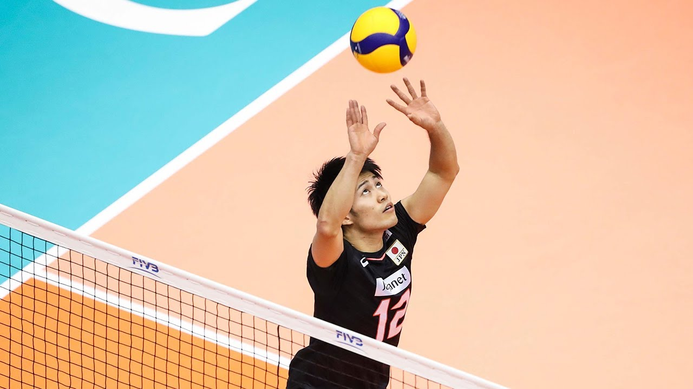
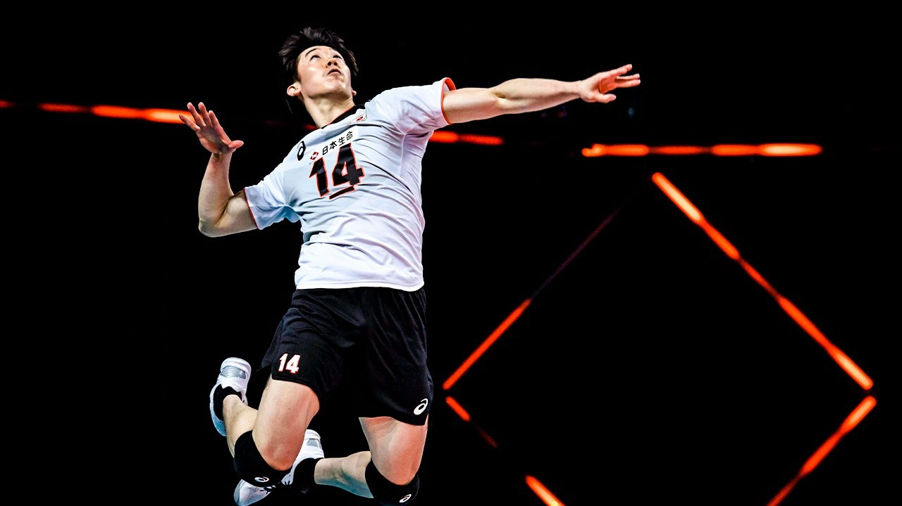
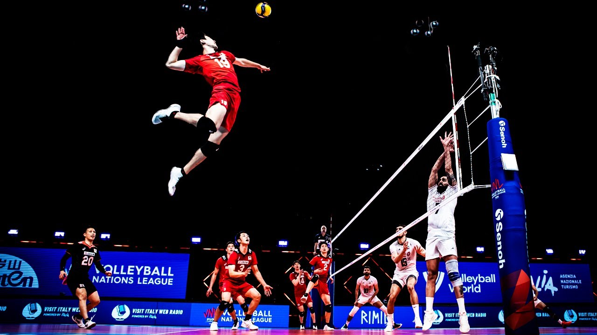
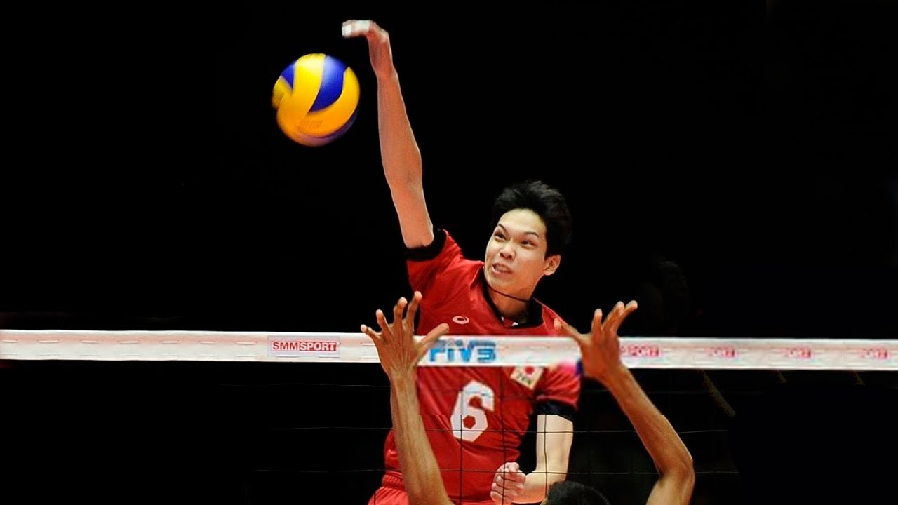
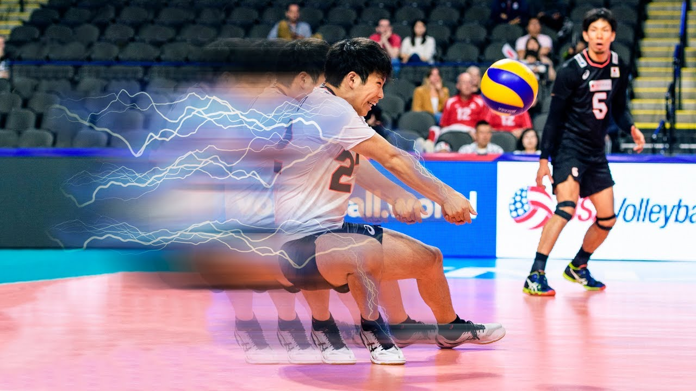

Funções
Todas as jogadas ofensivas no voleibol passam pelas mãos do levantador. Assim como o quarterback no futebol americano, ele é responsável por armar os ataques, passando ou “levantando” a bola para aquele que será o responsável por atacar.> 
Maior especialista em pontuar em uma equipe de vôlei, o oposto recebe esse nome por atuar sempre na posição oposta à do levantador. Como são experts em ataque, eles são boas opções para vir do fundo da quadra e atacar antes da linha de três metros.
Os ponteiros são responsáveis por atacar das posições 2 e 4 (saída e entrada de rede). Além de terem a função de ajudar na pontuação do ataque, auxiliam o líbero nos passes na defesa.
O central é, normalmente, um dos atletas mais altos do time de vôlei. Cabe ao jogador dessa função atacar da posição 3, no meio-de-rede. Além disso, exerce papel muito importante no bloqueio.
A função do líbero no voleibol foi criada pela FIVB (Federação Internacional de Voleibol) em 1998. Esse jogador é facilmente identificado, já que utiliza uniforme de cor diferente dos companheiros de time. O líbero tem função exclusivamente defensiva. Não pode atacar, bloquear ou sacar. Em contrapartida, quando a bola não está em jogo, pode trocar de posição com outro jogador do time sem precisar de autorização do árbitro.